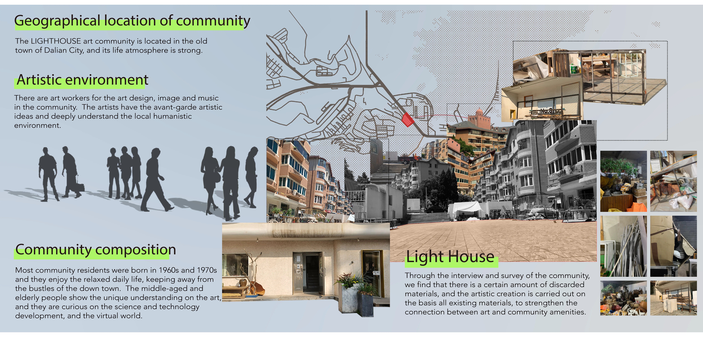
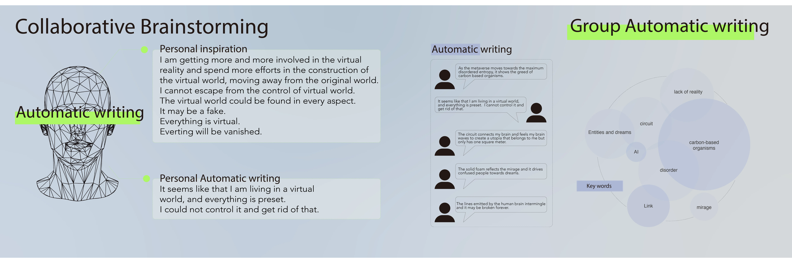
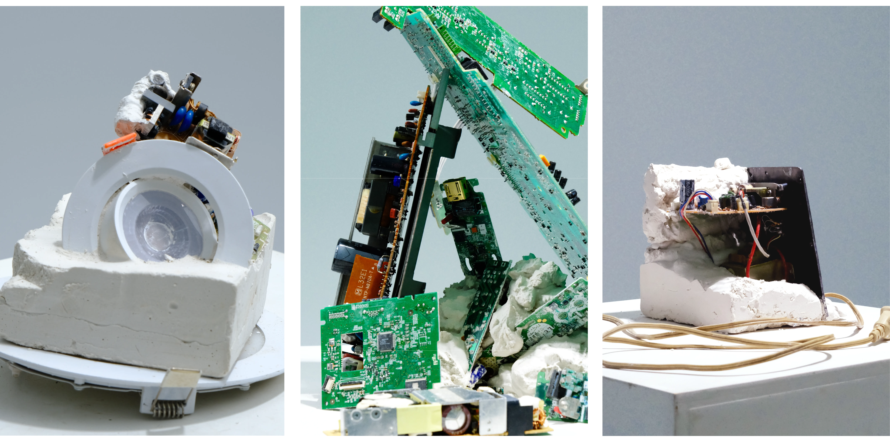

Memorial of shapes
Community Art Project

Community Art Project
LightHouse Art Community, Dalian
Plank Ton 1*1


The project takes place within a real residential community. Through interviews and open invitations, it gathers residents’ everyday narratives, fragmentary memories, and personal emotions, while reclaiming discarded materials from the neighbourhood as physical media. Like scattered language, these abandoned objects carry traces of time and layers of lived experience. Memory is no longer treated as abstract narration, but as material—something that can be touched, dismantled, and recomposed.
During the creative process, residents participate in automatic writing, expressing their perceptions of reality and the virtual world in unedited, spontaneous language. These texts are then entered into Midjourney to generate images, allowing personal memories to acquire new visual forms through algorithmic interpretation and reconstruction. AI does not simply “reproduce” memory; through the selection and reconfiguration of keywords, it reshapes narrative structure, producing images that are at once familiar and displaced. Participants directly experience how, in the age of artificial intelligence, memory shifts from private experience to data that can be computed, reorganised, and reformatted.
Ultimately, all materials are condensed into a one-square-metre exhibition space. This spatial constraint becomes symbolic: the complexity of individual life is folded into a limited physical frame, much like the way digital systems archive and compress information. At the same time, VR technology transforms the generated texts and images into an immersive environment, allowing memories to “reoccur” within a virtual space. Viewers remain situated within the real community while simultaneously entering memory landscapes reconstructed by algorithms.
The project establishes connections between community, discarded materials, linguistic experimentation, and AI image generation, exploring how individual memory is collected, computed, reconstructed, and presented in an era where digital and virtual technologies increasingly permeate everyday life. It does not seek to praise or reject AI; rather, it enables residents to directly experience a new mechanism of memory—one in which reality, algorithms, and imagination intertwine within a single square metre of space.




